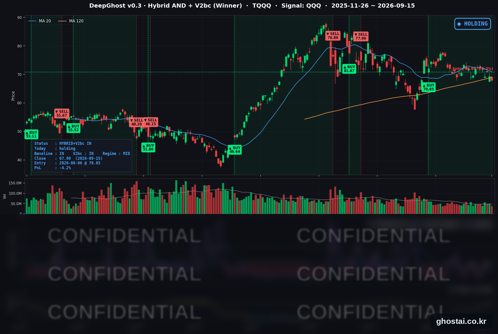

👻 매일 시그널과 히스토리를 홈페이지에서 한눈에 → www.ghostai.co.kr
회원 페이지 안내 — 회원 가입하시면 커버리지 전 종목의 원본 시그널과 분석 레포트를 매일 확인하실 수 있습니다. 회원 페이지는 블로그·유튜브보다 먼저 업데이트됩니다. 선착순 100명을 모집하고 있으며, 이메일과 필명만으로 가입하실 수 있고 서비스 사용료는 받지 않습니다. 가입 신청 후 운영자 승인을 거쳐 이용하실 수 있습니다.
중동 송유관이 멈추면서 유가가 뛰었고, 그 유가가 국채 금리를 2007년 7월 이후 가장 높은 종가까지 밀어 올렸습니다. 주식시장은 AI 관련 여부가 아니라 금리 민감도 노출순으로 나뉘었습니다. 전략은 TQQQ 보유를 유지하고 있나 여전히 추세를 읽을수 없는 시장입니다. 대하락 또는 대상승 전에 신호가 나옵니다. 그때 대응하면 됩니다.
📊 오늘의 매매 신호
| 항목 | 내용 |
|---|---|
| 오늘 할 일 | ✅ 아무것도 안 해도 됩니다 |
| 포지션 상태 | 📈 TQQQ 보유 중 (IN POSITION) |
| 매수 진입일 | 2026-08-06 (28거래일째) |
| 진입가 → 현재가 | $70.85 → $67.90 |
| 현재 포지션 수익 | -4.16% |
TQQQ 시그널 — IN POSITION
현재 상태: 매수 포지션 유지 중 | 이번 포지션 수익률 -4.16%

나스닥100(QQQ)이 -0.65%, TQQQ는 -1.98% 내려 67.90달러로 마감했습니다. 전략의 평가손익은 전 거래일 -2.23%에서 -4.16%로 내려갔고, 8월 6일 진입 이후 28거래일 가운데 가장 낮은 수준입니다. 그동안 평가손익이 마이너스였던 날은 9일입니다.
어제와는 하락의 성격이 달랐습니다. 전 거래일에는 주말 뉴스가 시가에 한꺼번에 반영된 뒤 장중에 되돌렸다면, 오늘 QQQ는 전 거래일 종가와 거의 같은 자리에서 출발해(-0.06%) 정규장 내내 밀리며 -0.60% 내려갔습니다. 뉴스 한 건에 대한 반응이 아니라 금리 수준이 장중 내내 주가에 반영된 하루였습니다.
오늘 새로 발생한 매매 신호는 없습니다. 9월 16일 시가에 체결될 예정 주문도 없습니다. 모델은 손실 폭 자체를 보고 매도를 결정하지 않습니다. 매도 조건은 별도의 시장 상태 지표로 판단하며, 오늘은 그 조건을 만족하지 않았습니다.
오늘 미국 시장 — 시황 요약
지수 마감
| 지수 | 종가 | 등락률 |
|---|---|---|
| S&P 500 | 7,585.73 | -0.45% |
| 나스닥 종합 | 25,981.57 | -0.78% |
| 다우존스 | 52,093.11 | -0.63% |
| 러셀 2000 | 2,870.29 | -0.76% |
| QQQ (나스닥100) | 704.54 | -0.65% |
| TQQQ | 67.90 | -1.98% |
네 지수 모두 -0.45%~-0.78% 구간에서 마감해 낙폭 자체는 크지 않았습니다. 그런데 S&P 500 구성 종목 502개 중 오른 종목은 156개(31.1%)뿐이고 중앙값은 -0.58%였습니다. 지수 하락폭보다 개별 종목의 중앙값이 더 낮다는 것은 소수 대형주가 지수를 받치고 나머지가 더 많이 내렸다는 뜻입니다.
국채 금리 동향
| 만기 | 수익률 | 전 거래일 대비 |
|---|---|---|
| 3개월 | 3.960% | +2.5bp |
| 5년 | 4.826% | +3.6bp |
| 10년 | 4.996% | +3.5bp |
| 30년 | 5.364% | +3.5bp |
10년물 4.996%는 2007년 7월 이후 가장 높은 종가입니다. 3년 가까이 넘지 못하던 2023년 10월 고점 4.988%를 0.8bp 차이로 넘어섰습니다. 하루 변동폭은 작지만 올라선 위치가 중요합니다. 30년물 5.364%는 2004년 6월 이후 최고 종가입니다.
주목할 점은 모든 만기물 금리가 2.5-3.6bp씩 나란히 오른 평행 이동이라는 것입니다. 단기물만 올랐다면 정책금리 인상만 반영한 것이겠지만, 30년물까지 같은 폭으로 움직인 것은 장기 인플레이션 기대 자체가 올라갔다는 신호에 가깝습니다. 장단기 스프레드(10년−3개월)는 103.6bp로 1.0bp 벌어졌고, 30년−10년은 36.8bp로 전 거래일과 같습니다. 역전 없는 정상 커브이고 기울기도 거의 그대로입니다.
커브가 정상인 채로 장기물이 함께 오르는 조합은 경기 침체 신호라기보다 물가가 오래갈 것이라는 신호입니다. 시장은 경기 둔화가 아니라 물가 때문에 연준이 긴축으로 방향을 돌린다고 보고 있습니다.
연준 발언 & 금리 패스
9월 15일은 FOMC 첫째 날이라 발표가 없었습니다. 연준은 9월 5일부터 17일까지 블랙아웃 기간이라 위원 공개 발언도 나오지 않았습니다.
시장의 예측은 인상입니다. 현재 정책금리는 3.50-3.75%이고, 25bp 인상 확률은 8월 소비자물가 발표 이후 80% 중후반에서 유지되고 있습니다. 실현되면 2023년 이후 첫 인상입니다. 결정과 경제전망요약(SEP, 점도표)은 9월 16일 오후 2시(동부시간), 기자회견은 2시 30분입니다. 인상 자체는 이미 가격에 상당 부분 들어가 있어, 시장이 실제로 반응할 재료는 표결 구성·점도표가 그리는 2027년 경로·기자회견 톤 세 가지입니다.
오늘의 핵심 이슈
-
금리가 다년간 고점을 새로 썼습니다. 10년물이 2007년 7월 이후 가장 높은 종가로, 30년물은 2004년 6월 이후 최고로 올라섰습니다. 3개월물부터 30년물까지 네 구간이 나란히 올랐고, 연준 결정을 하루 앞두고 채권시장은 이미 인상을 가격에 반영해 둔 상태입니다.
-
유가가 금리를 밀어 올렸습니다. WTI가 +3.94% 오른 배럴당 105.38달러, 브렌트가 +2.53% 오른 108.35달러로 둘 다 5월 19일 이후 가장 높은 종가입니다. 원인은 사우디 East-West 송유관입니다. 9월 10~11일 드론 공격을 받은 뒤 폐쇄됐는데, 하루 400만~500만 배럴을 나르던 노선인 데다 호르무즈 해협이 막힌 상태에서의 우회로였기 때문에 대체 경로가 마땅치 않습니다. 복구에 3~5주가 걸린다는 관측도 나옵니다. 에너지가 물가를, 물가가 금리를 밀어 올리는 경로가 그대로 작동했습니다.
-
종목 등락은 금리 노출 순서로 갈렸습니다. 오른 업종은 에너지(+1.70%)와 반도체(+1.25%)뿐이었고, 경기소비재(-2.35%)·소프트웨어(-1.66%)·유틸리티(-1.23%)처럼 먼 미래 현금흐름이나 배당 매력으로 평가받는 업종이 바닥이었습니다. 유틸리티는 15종목, 경기소비재는 14종목 중 오른 종목이 없었습니다. 반도체 강세도 AI 쪽이 아닙니다 — 업종 중앙값은 +0.09%에 그쳤고 데이터센터 관련 종목은 평균 -0.38%로 여전히 마이너스였습니다. 실제로 오른 쪽은 휴대폰·아날로그 계열이었습니다. 전 거래일의 로테이션은 이어지지 않고 상당 부분 되돌아왔습니다.
변동성 & 투자심리
VIX는 17.20(+0.59%)으로 전 거래일 17.10과 큰 차이가 없었습니다. 지수가 내리고 금리가 다년간 고점을 새로 쓴 날치고는 차분한 수준입니다. 시장이 내일 결정을 이미 아는 이벤트로 보고 있다는 뜻인데, 뒤집어 보면 점도표나 기자회견이 예상과 다를 경우 대비가 얇다는 뜻이기도 합니다.
공포탐욕지수는 29~30의 공포 구간입니다. VIX가 차분한 것과 대비되는데, 이 지수는 변동성 외에 시장 폭과 주가 강도도 함께 반영하기 때문입니다. 오른 종목이 31%에 그친 오늘의 시장 폭이 지수를 끌어내린 요인으로 보입니다.
정리하면 비관 쪽으로 기운 중립입니다. 공포 때문에 파는 장이 아니라, 금리 가정이 바뀌면서 보유 종목의 우선순위가 바뀌는 장에 가깝습니다.
매크로 & 원자재
| 품목 | 종가 | 등락률 |
|---|---|---|
| WTI 원유 | $105.38 | +3.94% |
| Brent 원유 | $108.35 | +2.53% |
| 금 선물 | $4,338.20 | -0.32% |
| 금 ETF (GLD) | $394.15 | +0.33% |
| 원유 ETF (USO) | $161.86 | +3.32% |
WTI는 최근 한 달 +27.9%, 올해 들어 +83.8%입니다. 금은 선물이 소폭 내린 반면 ETF는 올랐는데, 선물 정산 시점과 ETF 종가 시점이 달라 생기는 차이입니다.
지표 쪽에서는 9월 뉴욕 연은 엠파이어스테이트 제조업지수가 7.6으로 나와 예상치 14.75를 크게 밑돌았습니다. 물가는 오르는데 제조업 체감은 식고 있다는 조합이라 연준으로서는 까다로운 자리입니다. 8월 소비자물가는 전년 대비 +3.4%로 목표 2%를 한참 웃돌고 있습니다.
주요 종목 동향
| 종목 | 종가 | 등락률 | 비고 |
|---|---|---|---|
| QCOM | 187.80 | +4.25% | 커버리지 최대 상승. 목표주가 상향이라는 개별 재료 |
| META | 670.24 | +0.70% | 2일 누적 +3.43% |
| NVDA | 212.17 | +0.57% | 전 거래일 -3.36% 이후 하락은 멈췄으나 반등은 못 함 |
| MU | 927.60 | +0.39% | 2일 누적 -4.89% |
| INTC | 97.14 | -0.05% | 2일 누적 -5.63% |
| AAPL | 331.34 | -0.52% | 특이 재료 없음 |
| TSLA | 356.58 | -0.67% | 2일 누적 -2.42% |
| GOOGL | 344.98 | -1.26% | 전 거래일 +3.22%의 상당 부분을 되돌림 |
| AVGO | 339.27 | -1.58% | 이틀째 하락, 2일 누적 -6.28%로 커버리지 최대 |
| MSFT | 497.12 | -1.64% | 전 거래일 +1.97% → 오늘 반전 |
| AMZN | 248.42 | -2.02% | 이틀 연속 하락 |
| NFLX | 77.90 | -3.01% | 커버리지 최대 하락. 전 거래일 +3.77%를 거의 되돌림 |
전 거래일 로테이션의 되돌림입니다. 9월 14일에 올랐던 MSFT·NFLX·GOOGL이 오늘 모두 내렸고, 크게 내렸던 NVDA·MU·INTC는 하락을 멈췄지만 반등하지는 못했습니다. 2일 누적으로 보면 전 거래일의 상승분은 대부분 사라졌고 반도체 쪽은 여전히 마이너스입니다. 어느 쪽으로도 자금이 자리를 잡지 못한 하루로 읽는 편이 맞습니다.
다음 거래일 일정
- 9월 16일(수) FOMC 결정 + 점도표 — 오후 2시(동부시간) 금리 결정과 경제전망요약, 2시 30분 기자회견. 3.50~3.75%에서 25bp 인상이 80% 중후반 확률로 반영돼 있어, 관전 포인트는 인상 여부보다 점도표가 제시하는 이후 경로입니다.
- 8월 소매판매 — 같은 날 오전 8시 30분(동부시간). FOMC 발표 전에 나오는 지표라 당일 오전 분위기를 좌우할 수 있습니다.
- 사우디 송유관 복구 속보 — 복구 일정이 앞당겨지면 유가와 금리가 함께 되돌려질 수 있는 자리입니다.
Ghost.AI — Quantitative AI Investment
Model: DeepGhost v0.3 | Transformer-Based Deep Learning
Coverage: 13 tickers | Updated every trading day after US market close
⚠️ 본 자료는 정보 제공 목적으로만 작성되었으며 투자 권유가 아닙니다. 모든 투자의 책임은 투자자 본인에게 있습니다. 과거 성과가 미래 수익을 보장하지 않습니다.
[유의사항]
- 본 서비스는 불특정 다수를 대상으로 발행되는 단방향 정보 제공 서비스이며, 투자자 개인의 재산 상황·투자 목적·위험 선호도를 반영한 개별 투자 조언이 아닙니다.
- 고스트에이아이 주식회사는 고객과 쌍방향 의사소통(개별 상담, 맞춤형 자문 등)을 제공하지 않습니다.
- 본 콘텐츠는 투자 권유 또는 매매 주문의 청약·청약의 권유에 해당하지 않으며, 최종 투자 판단 및 그에 따른 손익의 책임은 전적으로 투자자 본인에게 있습니다.
고스트에이아이 주식회사